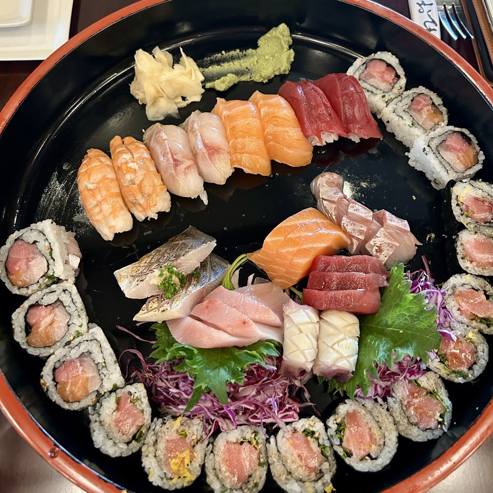

Sushi bar
Nigiri and sashimi from salmon, bluefin tuna, yellowtail and sea bass, plus signature rolls and a few limited-availability pieces like sea urchin.
Japanese restaurant · San Antonio, TX
Index of the menu
Nigiri, sashimi, signature rolls and hot dishes on NW Military Hwy. Open since 2002.

Fresh, well plated
From the sushi bar, the hot kitchen and the lunch menu.
Nigiri and sashimi from salmon, bluefin tuna, yellowtail and sea bass, plus signature rolls and a few limited-availability pieces like sea urchin.

Grilled New Zealand lamb chops, 17 oz 44 Farms rib-eye, Duroc pork chop and yuzu-miso sea bass: the steakhouse side.

Bento boxes come with a california roll, fried dumplings and steamed rice, next to lunch sushi, donburi and udon.


4.6 / 5 · 1615 Google reviews
1This place is one of a kind; lovely atmosphere. The food is amazing; no sushi even comes close to their quality. Our server was really kind and knowledgeable. The best sushi place in San Antonio; period.
2Extremely well-prepared dishes, both delicious and aesthetically pleasing. The fish is fresh and not too fishy. A good place for a date night. Expect a mix of people dressed upscale and families in pajamas. Good cocktail and mocktail menu. This was our second visit and both were good. Reservations recommended.
3The food was SO GOOD! I am already raving about it to my friends and family. We came at lunch time and only faced a 5 minute wait. Our server was wonderful and on top of things, and a gentleman, who I presume to be the owner or manager, was also super attentive to us from the moment we walked in.
About
Opened in 2002 to keep classic Japanese cooking alive, with new techniques and pairings. Classic, contemporary, cutting edge. Howard Hu is managing partner.
A cute dining room and a bar for drinks and small plates. Dishes are made to order, with wine, sake and beer to pair.

Visit
1810 NW Military Hwy, San Antonio, TX 78213
Reservations recommended. Plenty of parking around the building. Closed Sunday and Monday.